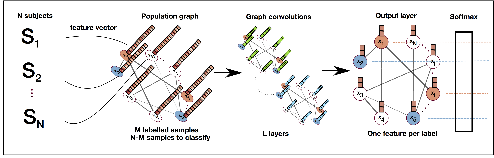
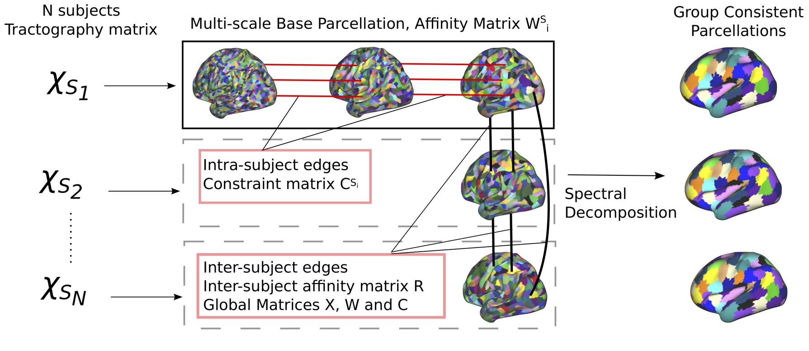

Software and Data
Brain Parcellation Survey
In Arslan et al. NeuroImage 2017, we provide a large-scale systematic comparison of more than 30 state-of-the-art connectivity-driven, anatomical, and random parcellation methods. The preprint, as well as the code and data used for the survey are provided at the dedicated webpage.
Software
The Python - Pytorch implementation of the paper:
- Will Norcliffe-Brown, Efstathios Vafeias, Sarah Parisot: Learning Conditioned Graph Structures for Interpretable Visual Question Answering. NIPS 2018.
is available on github at https://github.com/aimbrain/vqa-project.
It proposes a graph learner module combined with graph CNNS for Visual Question Answering.

The Python - Tensorflow implementation of the paper:
Sarah Parisot, Sofia Ira Ktena, Enzo Ferrante, Matthew Lee, Ricardo Guerrerro Moreno, Ben Glocker, Daniel Rueckert: Spectral Graph Convolutions for Population-based Disease Prediction. MICCAI 2017.
is available on github at https://github.com/parisots/population-gcn.
It exploits the novel concept of graphs CNNs to perform semi-supervised classification of populations.

The MATLAB implementation of the paper:
Parisot, S., Arslan, S., Passerat-Palmbach, J., Wells III, W.M., Rueckert, D.: Tractography-Driven Groupwise Multi-scale Parcellation of the Cortex. In: Information Processing in Medical Imaging. pp. 600–612. Springer (2015)
is now available on github at https://github.com/parisots/SpectralParcellation.
It performs groupwise and single-subject parcellation of the brain’s cortical surface through a spectral clustering approach.
Please note that we are making use of the code from the multi-scale normalised cuts method introduced in
Timothee Cour, Florence Benezit, Jianbo Shi : Spectral Segmentation with Multiscale Graph Decomposition. In: IEEE International Conference on Computer Vision and Pattern Recognition (CVPR), 2005.
Data
We have released the database used during my PhD for tumour segmentation and analysis. This is a set of 210 FLAIR MRI of different patients suffering from a diffuse Low Grade Glioma. All the images provided were acquired in a clinical setting, with varying quality and evolution of the disease. It results in a very challenging database for image processing tasks.
The complete database can be found at : http://db-gliomas-gradeii.net/ and figshare (NIFTI format)